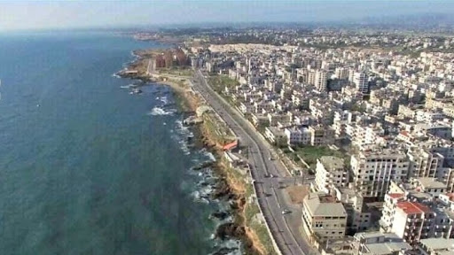

محافظة اللاذقية
: تفاصيل عن محافظة اللاذقية
محافظة اللاذقية محافظة سورية تقع شمال غرب سوريا تطل على البحر الأبيض المتوسط وفيها ميناء
كبير ومعظم أراضيها تغطيها الغابات والبساتين ويبلغ مساحة محافظة اللاذقية 2297 كم
ويبلغ عدد قرى محافظة 500 قرية و لها حدود مع تركيا ومع محافظة إدلب و محافظة حماة ومحافظة طرطوس، والمحافظة خليط من عدة أعراق من العرب والتركمان والأكراد.
